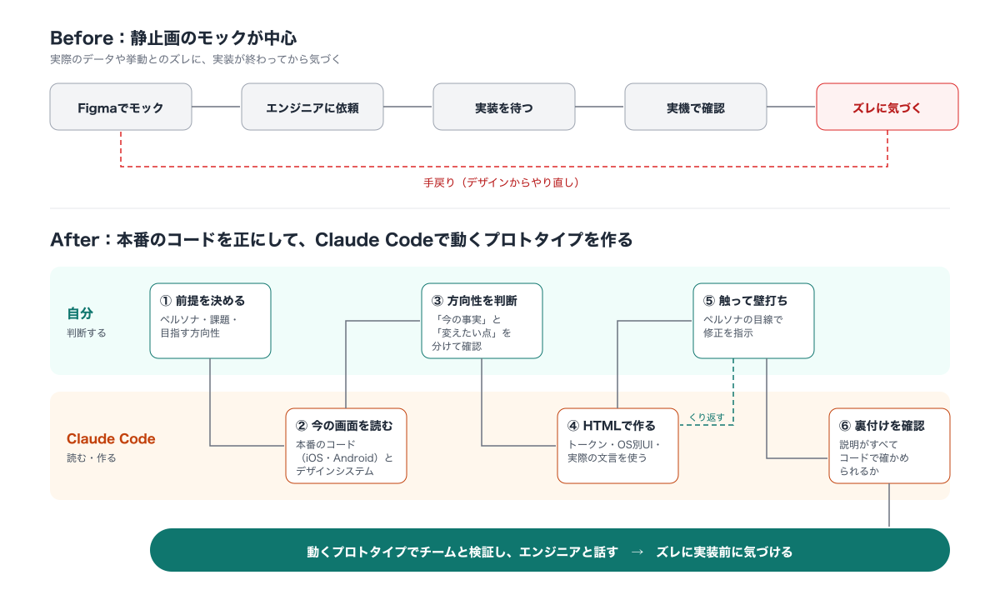
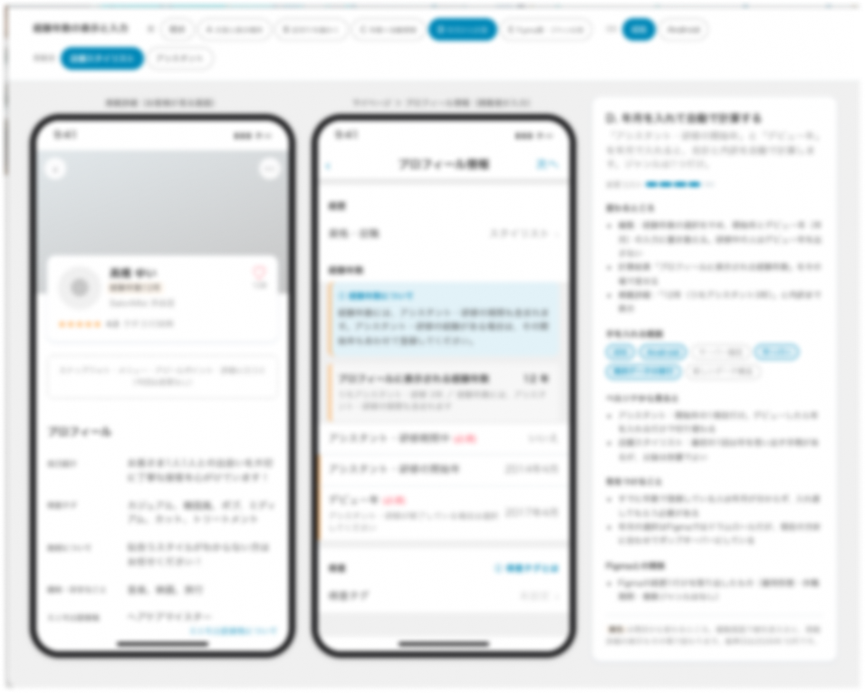
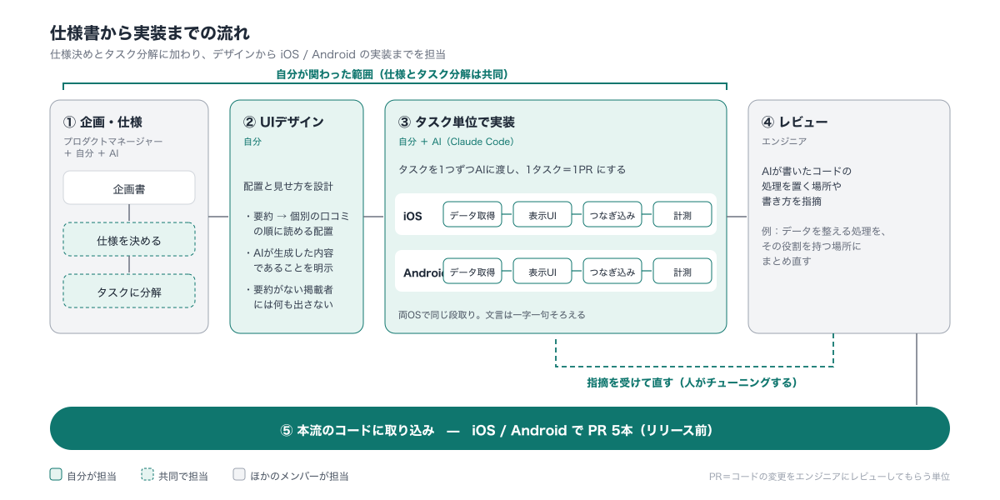
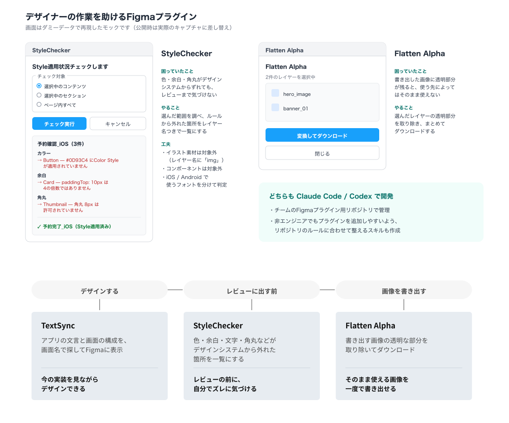

AIには事実を集めさせ、人は気づいて判断する
デザインと実装のズレは、最後に画面やコードを見比べて初めて気づくことがある。
そこで、本番のコードを正として実装の事実を集める役割をAIに任せ、人はズレに気づき、判断することに集中できるようにデザイン業務を組み立て直しました。
動くプロトタイプの作成から本番アプリの実装まで踏み込み、その進め方をスキルやツールとしてチームに展開しています。
- - 期間：2025年11月〜（継続中）
- - 役割：UIデザイン、施策の仕様決め・タスク分解（プロダクトマネージャーと共同）、iOS / Androidアプリ側の実装、スキル・ツールの設計と実装、チームへの展開
- - プロダクト：美容サロン予約サービス（iOS / Android）
- - 使用ツール：Claude Code / Codex / Figma / SwiftUI / Jetpack Compose
- - 成果物：HTMLプロトタイプ、AI口コミ分析のデザインと両OSの実装、デザイナー向けスキル集、Figmaプラグイン
取り組み
動くプロトタイプを作成して仕様とデザインの検証する
本番コードとデザインシステムを読み込むスキルを自作。経験年数表示の施策では、HTMLプロトタイプを複数案作成して比較
デザインから本番の実装まで
新機能の仕様決めに加わり、UIデザインからiOS / Androidのアプリ側の実装まで担当
チームの仕組みにする
デザイナー向けのスキル集を立ち上げ、別のデザイナーも参加して全13件に拡大
着手時点の課題
AIを使うこと自体ではなく、デザインと実装の間で起きていた確認の遅れや、個人に閉じたノウハウ、エンジニアのリソース待ちを解消することを課題として捉えました。
- 静止画のモックと実装を見比べる材料がなく、ズレに気づくのが実装後になっていた
- デザインの判断や作業の進め方が人によって異なり、ノウハウが共有されていなかった
- ちょっとした検証やアプリの実装も、エンジニアのリソース待ちで止まっていた

Ⅰ. 動くもので検証する
Figma上の静止画だけではなく、実際のコードやデザインシステムを参照したHTMLプロトタイプを用意し、施策の検討段階から動きや画面構成を比較できるようにしました。
実装の事実をデザインの手元にそろえる
「今の画面がどうなっているか」はFigmaではなく、本番アプリのコードを正とするルールを設定。AIがコードから読み取った現状と、今回変更したい提案を分けて示すことで、事実とアイデアが混ざらないようにしました。
- プロトタイプ作成スキル：対象ペルソナと課題を自分で定義し、AIが本番コードとデザインシステムを読んでHTMLプロトタイプを生成
- TextSync（Figmaプラグイン）：iOS実装の文言や画面構成を、画面名で検索して確認できるようにした（61画面分）
- 自動照合も試したが、結果が多すぎて分かりにくかったため機能を外し、最終的な見比べは人の目で行う設計にした
- 経験年数表示の施策では、スキルを使って8つの案を作成し、比較検討した

Ⅱ. 本番の実装まで踏み込む
「AI口コミ分析」は、掲載者への口コミをAIが要約して表示する新機能です。サーバー側の準備は進んでいた一方、アプリ側の実装が未着手のまま止まっていました。プロダクトマネージャーと仕様を決め、UIデザインからiOS / Androidのアプリ側の実装までを担当しました（リリース前）。
口コミセクションのUIデザイン
総合評価の直後、個別の口コミの手前に要約を配置。「まず全体の傾向をつかみ、気になれば個別の口コミを読む」という情報の順番にしました。AIが生成した内容であることを注意書きで示し、要約がない掲載者には何も表示しない仕様としています。
仕様を決め、実装できる単位に分ける
チームで採用している、企画から仕様・タスクまでを文書化して進める開発方式に沿い、プロダクトマネージャーと共同で仕様を決め、実装可能な単位にタスクを分解しました。
- 分解したタスクを1つずつAIに渡して実装し、1タスクを1つのPR（コード変更をレビューする単位）にした
- 「データの受け取り → 表示UI → 画面へのつなぎ込み」の順で、両OSとも同じ段取りで進めた
- 表示回数の計測も実装し、文言は両OSで一字一句そろえるなど、プロジェクトのルールに沿って実装した

エンジニアのレビューで仕上げる
AIが書いたコードは動作しても、処理を置く場所や書き方がプロジェクトの設計方針に合わないことがありました。レビューの指摘を受け、データを整える処理を本来の役割を持つ場所にまとめ直し、既存コードの書き方に合わせて修正しました。
両OSで計5本のPRがレビューを経て本流のコードに取り込まれました。AIで実装を終わらせるのではなく、既存の設計やコードベースに合う品質まで仕上げる工程を重視しました。
Ⅲ. チームの仕組みにする
デザイナー向けスキル集を立ち上げる
Claude Codeのスキルは、AIに渡す業務マニュアルです。手順やルール、参照する情報の正を明確にしておくことで、誰が依頼しても共通の手順と基準で作業を進めやすくなります。デザイナーが会話しながら結果を確かめ、判断することに集中できるようにしました。
2026年6月にデザイナー向けのスキル集を立ち上げ、非エンジニアでも迷わない言葉で導入手順を整備。その3週間後には別のデザイナーがデザイン系スキルを7件追加し、全13件に広がりました。
自作してスキル集に公開したスキル（6件）
プロトタイプ作成
本番コードとデザインシステムを読み、対象ペルソナに合わせたHTMLプロトタイプを対話しながら作成
スキル作成ガイド
着想から公開前チェックまでを対話で支援。既存スキルを調べ、判定基準・ひな形・チェックリストに整理
Figmaプラグイン整備
プラグインのひな形をリポジトリのルールに合わせて整備。専門用語を言い換え、公開作業や認証情報の入力はAIに任せない設計
インタビュー練習の相手役
AIがユーザー役などを演じ、音声でのインタビューやプレゼン練習後にフィードバック。公式ペルソナも指定可能
日報作成
SlackとNotionからその日の活動を集め、日報を作成
タスク収集
Slackのメンションや会議メモからタスクを集め、タスク一覧に追加
自分の業務用に作ったスキル
- UI事例のリサーチ：Mobbinで他社のUI事例を集め、施策検討用の資料にまとめる
- デザインニュースの要約：デザイン情報を集めるチャンネルの投稿を要約して保存する
デザイナーの作業を助けるFigmaプラグインを作る
日々の作業で手間がかかるところやミスが起きやすいところを、Claude Code / Codexでプラグインにしました。自分でデザインシステムとのズレを確認できるようにすることや、繰り返しの作業を減らすことを目的としています。
- StyleChecker：色・線・文字サイズ・余白・角丸がデザインシステムの値やスタイルに沿っているかを確認し、外れている箇所を一覧表示
- Flatten Alpha：画像書き出し時に透明部分を取り除き、そのまま使える形でダウンロード
- プラグインを追加しやすいように、スキルとあわせて管理リポジトリのルールも整備

結果
- デザイン段階で本番実装の事実を参照できるようになり、実装前にズレを確認するための材料をそろえられるようになった
- 「AI口コミ分析」で仕様決めからUIデザイン、iOS / Androidのアプリ側実装までを担当し、止まっていた機能の実装を完了（リリース前）
- 自分が立ち上げたスキル集に別のデザイナーも参加し、全13件に拡大
- 両OSで計5本のPRがレビューを経て本流のコードに取り込まれた
- Figmaプラグインを3種作成し、デザイン確認や素材書き出しなどの日々の作業を支援
学びとこれから
AIが手を動かし、人が品質をつくる
AIを使えば、デザイナーでもコードを書ける。ただ、デザインとのズレに気づくことも、コードをプロダクトの品質まで仕上げることも、最後は人が担います。
AIには事実を集めさせ、手を動かしてもらう。人は結果を見て気づき、判断し、チューニングする。その役割分担を設計することが、AI時代のデザイナーの強みだと考えています。